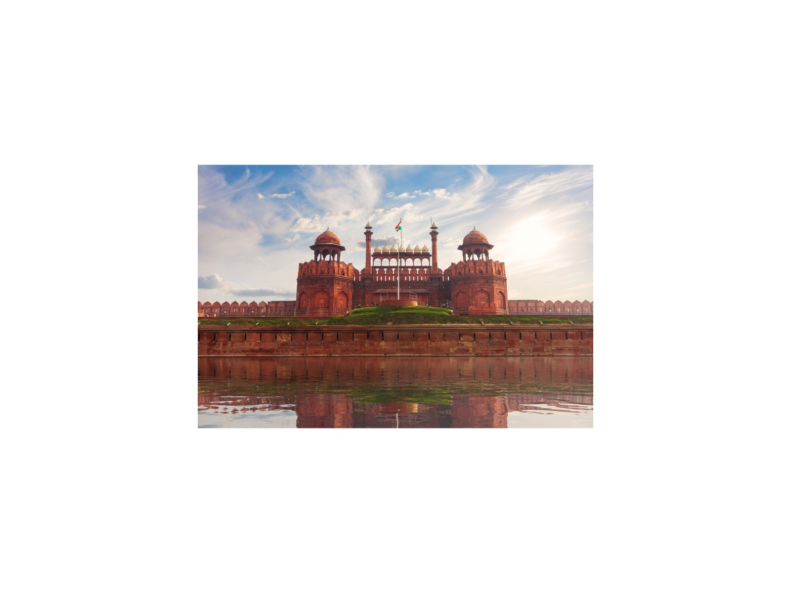
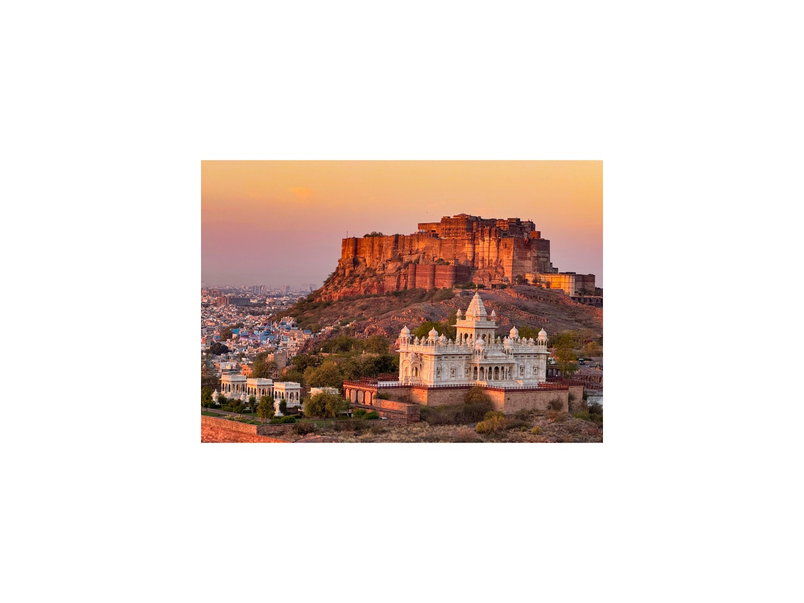
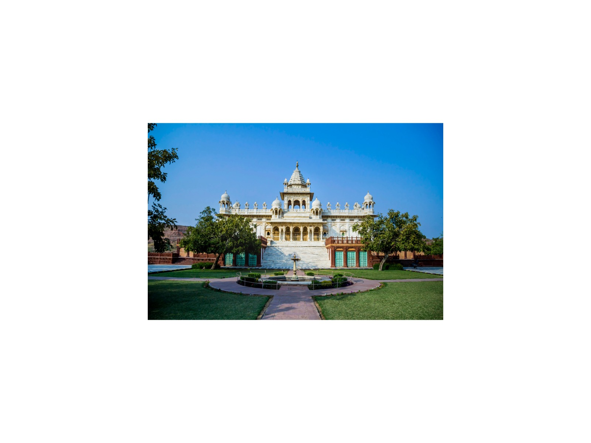
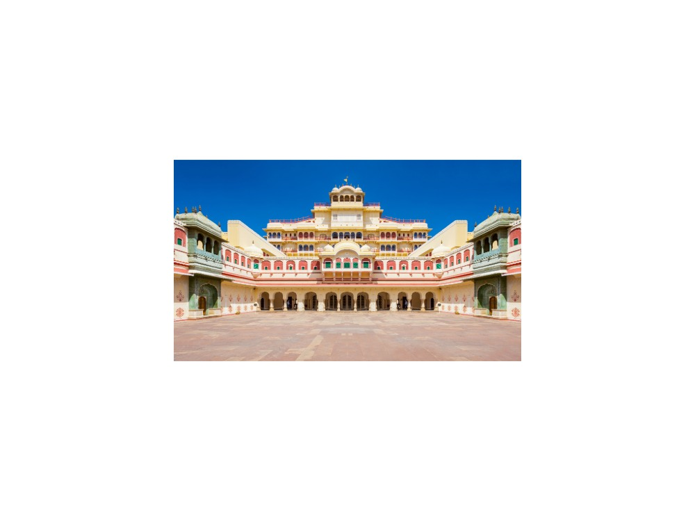
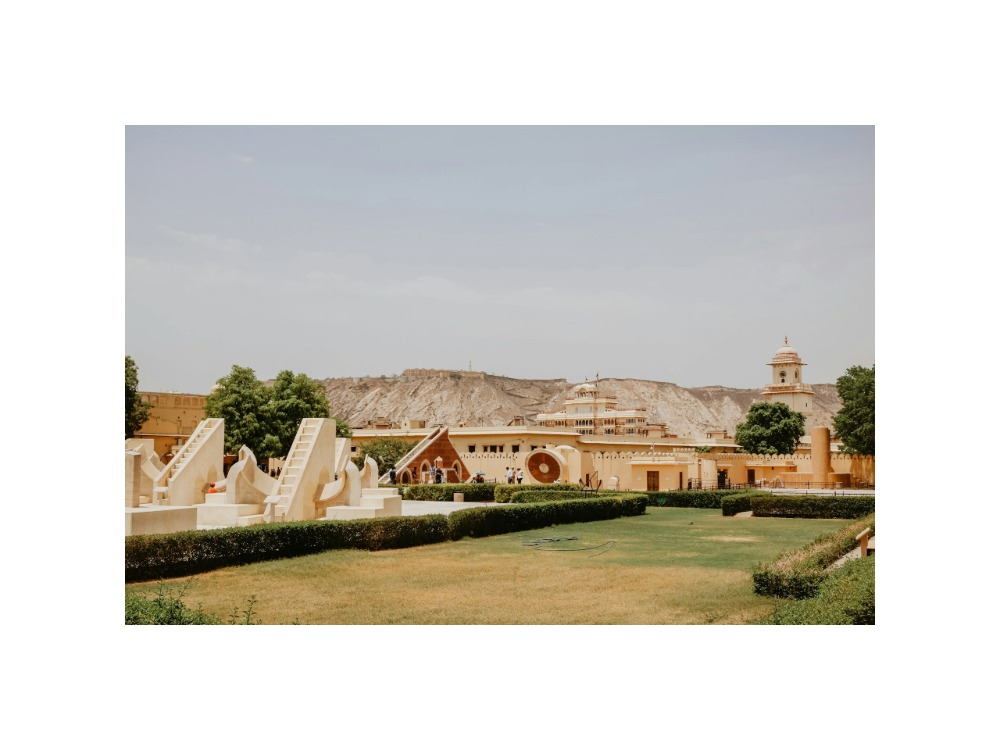
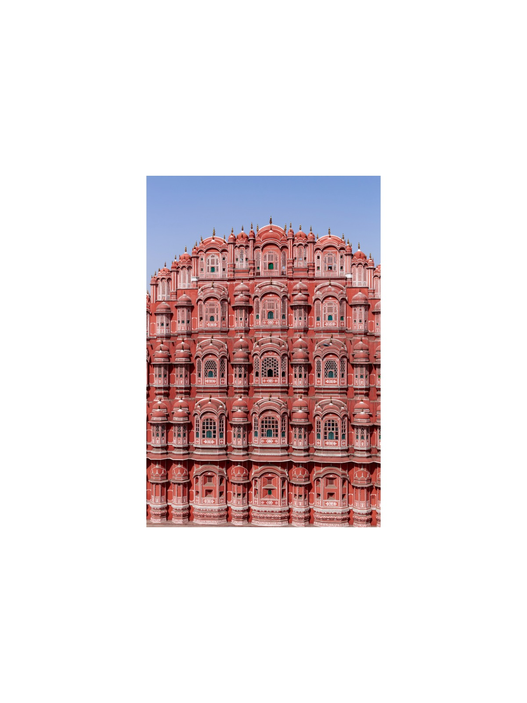
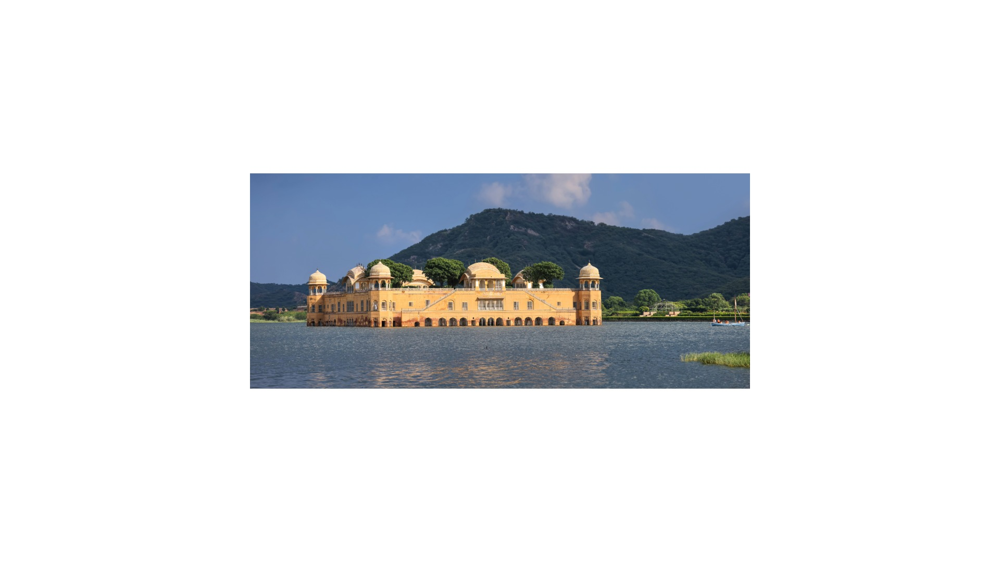
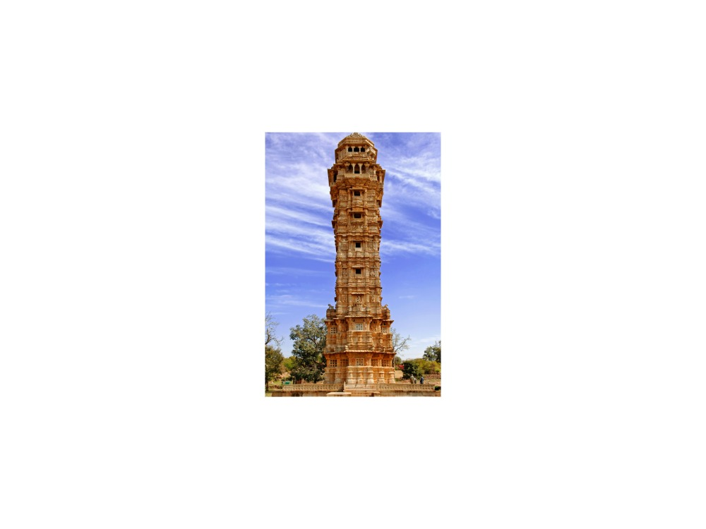

8 дней: крепости Раджастана — от Дели до Удайпура
Дели · Джайпур · Джодхпур · Ранакпур · Кумбхалгарх · Читторгарх · Эклингджи · Удайпур
О путешествии
Великие горные форты и озёра Раджастана от Джайпура до Джодхпура и Удайпура, с Кумбхалгархом и Читторгархом по пути.
Насыщенные дни с несколькими длинными переездами. Подходит энергичным путешественникам.
Главное
- Горные форты Раджастана (ЮНЕСКО): Амбер, Кумбхалгарх, Читторгарх
- Объекты ЮНЕСКО в Дели: Красный форт, мавзолей Хумаюна, Кутб-Минар
- Форт Мехрангарх, Джасвант Тхада и дворец Умайд Бхаван в Джодхпуре
- 1 444 мраморные колонны джайнского храма Ранакпур
- Закатная прогулка на лодке по озеру Пичола и Городской дворец в Удайпуре
Маршрут и программа по дням
Схематичный маршрут, не в масштабе.
Подробная программа по дням пока на английском. Русская версия готовится; полную программу на русском я пришлю по запросу.
День 1Arrival & UNESCO Grandeur of Delhi
Arrive in Delhi. Tour Qutub Minar, Humayun's Tomb, Red Fort, and Jama Masjid. Overnight in Delhi.
День 2Drive to Jaipur Walled City
Drive to Jaipur (approx. 5–6 hours). Tour the UNESCO Walled City, City Palace, Jantar Mantar, and Hawa Mahal. Overnight in Jaipur.
День 3Jaipur Hill Forts & Cultural Excursions
Tour Amber Fort (Sheesh Mahal), Jaigarh Fort, Nahargarh Fort, and Jal Mahal. Optional Hanthi Gaon visit. Overnight in Jaipur.
День 4Drive to Jodhpur (The Blue City)
Drive to Jodhpur (approx. 6 hours). Tour Mehrangarh Fort, Jaswant Thada, and Umaid Bhawan Palace. Overnight in Jodhpur.
День 5Ranakpur Marble Temple & Kumbhalgarh Wall
Drive from Jodhpur to Ranakpur (approx. 3.5 hours), timed for the afternoon window when the Jain temple is open to non-Jain visitors (1,444 uniquely carved pillars). Continue to Kumbhalgarh (approx. 1 hour) and tour UNESCO Kumbhalgarh Fort and its 36-km wall. Overnight in Kumbhalgarh.
День 6Chittorgarh Fort & Drive to Udaipur
Drive to Chittorgarh (approx. 3 hours) and tour UNESCO Chittorgarh Fort (Vijay Stambh, Padmini Mahal, Gaumukh reservoir). Continue to Udaipur (approx. 2.5 hours). Chittorgarh is a detour rather than on the direct route (Kumbhalgarh–Udaipur is approx. 2 hours), so this is a long day of about 5.5 hours' driving. Overnight in Udaipur.
День 7Romance of Udaipur & Sacred Eklingji
Tour City Palace, Jagdish Temple, and Saheliyon ki Bari. Excursion to divine kingship shrine at Eklingji Temple and Nagda Saas-Bahu Temples. Evening boat ride on Lake Pichola. Overnight in Udaipur.
День 8Leisure & Departure
Morning at leisure in Udaipur, then transfer to Udaipur Airport for the flight to Delhi (flight not included).
Лучшее время для поездки
Лучшее Возможно Нежелательно
Лучшее время: окт–мар. Также подходит: апр, сен.
Октябрь — март — самый комфортный сезон: тёплые дни и прохладные утра. В декабре и январе возможны туманы и холод на рассвете. С апреля по июнь очень жарко: мы начинаем рано и отдыхаем в полдень. С июля по сентябрь — влажный сезон дождей и меньше туристов.
Что включено
Включено
- Частный автомобиль с кондиционером и водителем
- Лицензированный гид (русский или английский)
- Входные билеты в памятники
- Отели (7 ночей)
- Прогулка на лодке
Не включено
- Авиабилеты
- Питание, если не указано
- Чаевые и личные расходы
- Туристическая страховка
Ориентировочно; точный состав подтверждается в вашем персональном расчёте.
Полезно знать
- Джайнский храм Ранакпур открыт для посетителей других вероисповеданий только во второй половине дня.
Места этого маршрута
Часть страниц памятников пока на английском языке.
 Форт Амбер
Форт Амбер Форт Читторгарх
Форт Читторгарх
Красный форт Мавзолей Хумаюна
Мавзолей Хумаюна Кутб-Минар
Кутб-Минар
Форт Мехрангарх
Джасвант Тхада Дворец Умайд Бхаван
Дворец Умайд Бхаван Джайнский храм Ранакпур
Джайнский храм Ранакпур Озеро Пичола
Озеро Пичола
Городской дворец Джайпура Городской дворец Удайпура
Городской дворец Удайпура Джама-масджид
Джама-масджид
Джантар-Мантар
Хава-Махал Форт Джайгарх
Форт Джайгарх Форт Нахаргарх
Форт Нахаргарх
Джал-Махал Голубой город Джодхпур
Голубой город Джодхпур
Виджай Стамбх Храм Джагдиш
Храм Джагдиш Сахелион-ки-Бари
Сахелион-ки-Бари Храм Эклингджи
Храм ЭклингджиВопросы
Это частное путешествие?
Да. Каждое путешествие — только для вас и ваших спутников, с личным гидом, автомобилем и водителем. Никаких групп и сборных туров.
Можно ли изменить маршрут?
Да. Эта программа — отправная точка. Расскажите об интересах, темпе и датах, и я скорректирую маршрут до расчёта стоимости.
На каких языках проводятся туры?
Викрамджит проводит экскурсии на русском и английском.
Насколько тур физически сложный?
Насыщенные дни с несколькими длинными переездами. Подходит энергичным путешественникам. Оценка темпа: быстрый темп.
Как забронировать и когда я узнаю цену?
Отправьте запрос с датами. В течение 24 часов вы получите персональную программу и расчёт стоимости.
Темы
Королевские крепости и цитадели Маршрут Всемирного наследия ЮНЕСКО
Направления
Дели Джайпур и Абханери Джодхпур, Ранакпур и Кумбхалгарх Удайпур и Читторгарх
Похожие путешествия
 1 день
1 деньОднодневный частный тур из Дели: Тадж-Махал и форт Агры
Утренний свет на Тадж-Махале и красные дворики форта Агры за один частный день из Дели — с личным гидом и автомобилем.
Подробнее →1 деньДели за один день: имперская столица и духовное наследие
Старый Дели, могольские мавзолеи и святыни трёх религий — в вашем темпе за один частный день.
Подробнее →1 деньДжайпур за один день: частный королевский экспресс из Дели
Форт Амбер, Городской дворец и главные места Розового города за один долгий день из Дели — для тех, у кого есть всего один день.
Подробнее →